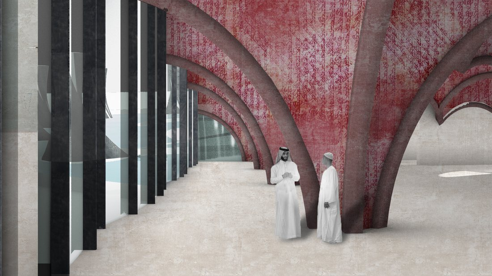
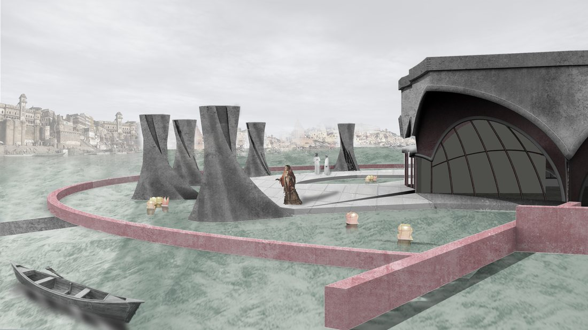

设计以中国南方一处沿河村落为例。一套模块化的水循环系统贴河布置，可依不同地段的人口密度与场所条件灵活组合。河水被引入设施，净化后作为饮用与盥洗之用；使用后的废水，则在重新汇入河流之前再经过滤。这些设施直接漂浮在河里，节约管道铺设成本的同时，河流本身的动能也可作为过滤的动力。
 张斯琦
张斯琦
张斯琦
张斯琦

项目为世界上缺乏卫生设施的沿河村庄，提出一套通用的卫生方案。以河流为中心，从饮用水、沐浴、公共厕所到丧葬等一系列的卫生设施，全部沿河水展开。河既是饮水之源，也是盥洗之处，是祭祀的场，亦是送别的岸。


设计以中国南方一处沿河村落为例。一套模块化的水循环系统贴河布置，可依不同地段的人口密度与场所条件灵活组合。河水被引入设施，净化后作为饮用与盥洗之用；使用后的废水，则在重新汇入河流之前再经过滤。这些设施直接漂浮在河里，节约管道铺设成本的同时，河流本身的动能也可作为过滤的动力。


沿河而生的，不只是日常，还有风俗。撒灰、放河灯、临水祭祀——这些是村庄与河之间延续了几代人的关系。模块化系统贴河展开，恰好为这些仪式留出原有的水岸。



建筑形态取意于河灯。基础设施漂浮于水面之上，轻盈、半透、随波微动，如村人临水祈福时放下的一盏河灯。日常的盥洗与如厕，被赋予了一种近乎仪式的轻盈。